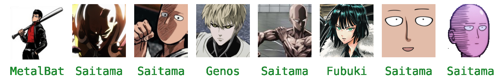
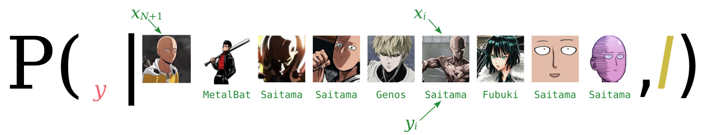

27 Beyond machine learning
\(\DeclarePairedDelimiter{\set}{\{}{\}}\)
27.1 Machine learning from a bird’s-eye view
The last few chapters gave a brief introduction to and overview of popular machine-learning methods, their terminology, and the points of view that they typically adopt. Now let’s try to look at them keeping in mind our main goal in this course: exploring new inference methods, understanding their foundations, and thinking out of the box.
In this and the next few chapters we shall focus on the following question: to what purpose do we use machine-learning algorithms?. After answering this question and clarifying what the purpose is, we shall try to achieve it in an optimal way, according to the methods and concepts we studied in the initial part of the course. Remember that they are guaranteed to give the optimal solution (chapter 2). But we shall keep an eye open to see where our optimal methods seem to be similar or dissimilar to machine-learning methods.
Thereafetr, in the last chapters, we shall examine where the optimal solution and machine-learning methods converge and diverge, try to understand what machine-learning methods do from the point of view of our optimal solution, and think of ways to improve them.
27.2 A task-oriented categorization of some machine-learning problems
For our goal, the common machine-learning categorization and terminology discussed in chapter 24 are somewhat inadequate. Distinctions such as “supervised learning” vs “unsupervised learning” are of secondary importance to a data engineer (as opposed to a “data mechanic”) for several reasons:
They group together some types of tasks that are actually quite different from an inferential or decision-making viewpoint; and conversely they separate types of tasks that are quite similar.
They focus on procedures rather than on purposes.
The important questions for us, in fact, are: What do we wish to infer or choose? and From which kind of information? These questions define the problem we want to solve.
Let’s introduce a different categorization of the kind of tasks that we want to accomplish; a categorization that tries to focus on the purpose or task, and on the types of desired information and of available information, rather than on the procedure.
The categorization below is informal. It only provides a starting point from which to examine a new kind of task we may face. Many tasks will fall in between categories: every data-engineering or data-science problem is unique.
We exclude from the start all tasks that require an agent to continuously and actively interact with its environment for acquiring information, making choices, getting feedback, and so on. Clearly these tasks are the domain of Decision Theory in its most complex form, with ramified decisions, strategies, and possibly the interaction with other decision-making agents. To explore and analyse this kind of tasks is beyond the purpose of this course.
We focus on tasks where multiple “instances” with similar characteristics are involved, and the agent has some question related to a “new instance”. According to the conceptual framework developed in part Data II, we can view these “instances” as units of a practically infinite population. The “characteristics” that the agent has observed or must guess are variates common to all these units.
Remember that you can adopt any terminology you like. If you prefer “instance” and “characteristics” or some other words to “unit” and “variate”, then use them. What’s important is that you understand the ideas and methods behind these words
New unit: given vs generated
A first distinction can be made between
Tasks where an agent must itself generate a new unit
Tasks where a new unit is given to an agent, who must guess some of its variates
An example of the first type of task is image generation: an algorithm is given a collection of images and is asked to generate a new image based on them.
We shall see that these two types of task are actually quite close to each other, from the point of view of Decision Theory and Probability Theory.
The terms “discriminative” and “generative” are sometimes associated in machine learning with the two types of task. This association, however, is quite loose, because some tasks typically called “generative” actually belong to the first type. We shall therefore avoid these terms. It’s enough to keep in mind the distinction between the two types of task above.
Guessing variates: all or some
Focusing on the second type of task (a new unit is given to the agent), we can further divide it into two subtypes:
The agent must guess all variates of the new unit
The agent must guess some variates of the new unit, but can observe other variates of the new unit
An example of the first subtype of task is the “urgent vs non-urgent” problem of § 17.4: having observed incoming patients, some of which where urgent and some non-urgent, the agent must guess whether the next incoming patient will be urgent or not. No other kinds of information (transport, patient characteristics, or others) are available.
We shall call predictands1 the variates that the agent must guess in a new unit, and predictors those that the agent can observe.2 The first subtype above can be viewed as a special case of the second where all variates are predictands, and there are no predictors.
1 literally “what has to be predicted”
2 In machine learning and other fields, the terms “dependent variable”, “class” or “label” (for nominal variates) are often used for “predictand”; and the terms “independent variable” or “features” are often used for “predictor”.
The terms “unsupervised learning” and “supervised learning” are sometimes associated in machine learning with these two subtypes of task. But the association is loose and can be misleading. “Clustering” tasks, for example, are usually called “unsupervised” but they are examples of the second subtype above, where the agent has some predictors.
Information available in previous units
Finally we can further divide the second subtype above into two or three subsubtypes, depending on the information available to the agent about previous units:
All predictors and predictands of previous units are known to the agent
All predictors of previous units, but not the predictands, are known to the agent
All predictands of previous units, but not the predictors, are known to the agent
An example of the first subsubtype of task is image classification. The agent is for example given the following 128 × 128-pixel images and character-labels from the One Punch Man series:

and is then given one new 128 × 128-pixel image:
of which it must guess the character-label.
In the example just given, the image is the predictor, the character-label is the predictand.
A slight modification of the example above gives us a task of the second subsubtype. A different agent is given the images above, but without labels:
and must then guess some kind of “label” or “group” for the new image above; and possibly also for the images already given. The kind of “group” requested depends on the specific problem.
In this example the image is the predictor, and the label or group is the predictand. The difference from the previous example is that the agent doesn’t have the predictand values of previous units.
The term “supervised learning” typically refer to the first subsubtype above.
The term “unsupervised learning” can refer to the second subsubtype, for instance in “clustering” tasks. In a clustering task, the agent tries to guess which group or “cluster” a unit belong to, given a collection of similar units, whose groups are not known either. The cluster effectively is the predictand variate. In some cases the agent may want to guess the cluster not only of a new unit, but also of all previous units.
The third subsubtype is very rarely considered in machine learning, yet it is not an unrealistic task.
The types, subtypes, subsubtypes above are obviously not mutually exclusive or comprehensive. We can easily imagine scenarios where an agent has some predictors & predictands available about some previous units, but only predictors or only predictands available for other previous units. This scenario falls in between the three subsubtypes above. In machine learning, hybrid situations like these are categorized as “missing data” or “imputation”.
27.3 Flexible categorization using probability theory
We have been speaking about the agent’s guessing the values of some variates. “Guessing” means that there’s a state of uncertainty: the agent can’t simply say something like “the value of the label is Saitama”, because that could be false. Uncertainty means that the most honest thing that the agent can do is to express degrees of belief about each of the possible values. Probability theory enters the scene.
In fact it turns out that the categorization above into subtypes and subsubtypes of tasks can be presented in a more straightforward and flexible way using probability-theory notation.
Notation
First let’s introduce some symbol conventions to be used in the next chapters.
- We shall denote with \({\color[RGB]{68,119,170}Z}\) all variates that are of interest to the agent: those to be guessed as well as those that may be already known.
- The variates to be guessed in a new unit (the predictands) will be collectively denoted with \({\color[RGB]{68,119,170}Y}\).
- The variates that can be observed in a new unit (the predictors) will be collectively denoted with \({\color[RGB]{68,119,170}X}\). In cases where there are no predictors, \({\color[RGB]{68,119,170}X}\) is empty.
Therefore we have \({\color[RGB]{68,119,170}Z}= ({\color[RGB]{68,119,170}Y}\mathbin{\mkern-0.5mu,\mkern-0.5mu}{\color[RGB]{68,119,170}X})\). In cases where there are no predictors we have \({\color[RGB]{68,119,170}Z}= {\color[RGB]{68,119,170}Y}\).
- \({\color[RGB]{68,119,170}Z}_i\) denote all variates for unit #\(i\).
- \({\color[RGB]{68,119,170}Y}_i\) denote all predictands for unit #\(i\).
- \({\color[RGB]{68,119,170}X}_i\) denote all predictors for unit #\(i\).
As usual we number from \(i=1\) to \(i=N\) the units that serve for learning, and \(i=N+1\) is the new unit of interest to the agent.
Recall (§ 5.3) that in probability notation
\[\mathrm{P}(\text{\color[RGB]{238,102,119}\small[proposal]}\nonscript\:\vert\nonscript\:\mathopen{}\text{\color[RGB]{34,136,51}\small[conditional]} \mathbin{\mkern-0.5mu,\mkern-0.5mu}\mathsfit{I})\]
the proposal contains what the agent’s belief is about, and the conditional contains what’s supposed to be known to the agent, together with the background information \(\mathsfit{I}\).
Finally let’s see how to express different typologies of tasks in probability notation.
The agent must guess all variates of the new unit
This kinds of guess is represented by the probability distribution
\[ \mathrm{P}(\color[RGB]{238,102,119} Z_{N+1}\mathclose{}\mathord{\nonscript\mkern 0mu\textrm{\small=}\nonscript\mkern 0mu}\mathopen{}z \color[RGB]{0,0,0}\nonscript\:\vert\nonscript\:\mathopen{} \color[RGB]{34,136,51} Z_{N}\mathclose{}\mathord{\nonscript\mkern 0mu\textrm{\small=}\nonscript\mkern 0mu}\mathopen{}z_{N} \mathbin{\mkern-0.5mu,\mkern-0.5mu}\dotsb \mathbin{\mkern-0.5mu,\mkern-0.5mu} Z_{1}\mathclose{}\mathord{\nonscript\mkern 0mu\textrm{\small=}\nonscript\mkern 0mu}\mathopen{}z_{1} \color[RGB]{0,0,0}\mathbin{\mkern-0.5mu,\mkern-0.5mu}\mathsfit{I}) \]
for all possible values \(\color[RGB]{238,102,119}z\) in the domain of \({\color[RGB]{68,119,170}Z}\). The specific values \(\color[RGB]{34,136,51}z_N, \dotsc, z_1\) of the variate \({\color[RGB]{68,119,170}Z}\) for the previous units are known to the agent.
The agent must guess some variates of the new unit, having observed other variates of the new unit
This kind of guess is represented by the probability distribution
\[ \mathrm{P}(\color[RGB]{238,102,119} Y_{N+1}\mathclose{}\mathord{\nonscript\mkern 0mu\textrm{\small=}\nonscript\mkern 0mu}\mathopen{}y \color[RGB]{0,0,0}\nonscript\:\vert\nonscript\:\mathopen{} \color[RGB]{34,136,51} X_{N+1}\mathclose{}\mathord{\nonscript\mkern 0mu\textrm{\small=}\nonscript\mkern 0mu}\mathopen{}x \, \mathbin{\mkern-0.5mu,\mkern-0.5mu}\, \dotsb \, \color[RGB]{0,0,0}\mathbin{\mkern-0.5mu,\mkern-0.5mu}\mathsfit{I}) \]
for all possible values \(\color[RGB]{238,102,119}y\) in the domain of the predictands \({\color[RGB]{68,119,170}Y}\). The value \(\color[RGB]{34,136,51}x\) of the predictors \({\color[RGB]{68,119,170}X}\) for the new unit is known to the agent.
The remaining information “\(\dotsb\)” contained in the conditional depends on the subsubtype of task:
All predictors and predictands of previous units are known to the agent
This corresponds to the probability distribution
\[ \mathrm{P}(\color[RGB]{238,102,119} Y_{N+1}\mathclose{}\mathord{\nonscript\mkern 0mu\textrm{\small=}\nonscript\mkern 0mu}\mathopen{}y \color[RGB]{0,0,0}\nonscript\:\vert\nonscript\:\mathopen{} \color[RGB]{34,136,51} X_{N+1}\mathclose{}\mathord{\nonscript\mkern 0mu\textrm{\small=}\nonscript\mkern 0mu}\mathopen{}x \, \mathbin{\mkern-0.5mu,\mkern-0.5mu}\, Y_{N}\mathclose{}\mathord{\nonscript\mkern 0mu\textrm{\small=}\nonscript\mkern 0mu}\mathopen{}y_{N} \mathbin{\mkern-0.5mu,\mkern-0.5mu} X_{N}\mathclose{}\mathord{\nonscript\mkern 0mu\textrm{\small=}\nonscript\mkern 0mu}\mathopen{}x_{N} \mathbin{\mkern-0.5mu,\mkern-0.5mu}\dotsb \mathbin{\mkern-0.5mu,\mkern-0.5mu} Y_{1}\mathclose{}\mathord{\nonscript\mkern 0mu\textrm{\small=}\nonscript\mkern 0mu}\mathopen{}y_{1} \mathbin{\mkern-0.5mu,\mkern-0.5mu} X_{1}\mathclose{}\mathord{\nonscript\mkern 0mu\textrm{\small=}\nonscript\mkern 0mu}\mathopen{}x_{1} \color[RGB]{0,0,0}\mathbin{\mkern-0.5mu,\mkern-0.5mu}\mathsfit{I}) \]
for all possible \(\color[RGB]{238,102,119}y\). All information about predictands \({\color[RGB]{68,119,170}Y}\) and predictors \({\color[RGB]{68,119,170}X}\) for previous units appears in the conditional.
In the example with image classification, a pictorial representation of this probability would be

where \({\color[RGB]{238,102,119}y} \in \set{\color[RGB]{238,102,119}{\small\verb;Saitama;}, {\small\verb;Fubuki;}, {\small\verb;Genos;}, {\small\verb;MetalBat;}, \dotsc \color[RGB]{0,0,0}}\).
All predictors of previous units, but not their predictands, are known to the agent
This corresponds to the probability distribution
\[ \mathrm{P}(\color[RGB]{238,102,119} Y_{N+1}\mathclose{}\mathord{\nonscript\mkern 0mu\textrm{\small=}\nonscript\mkern 0mu}\mathopen{}y \color[RGB]{0,0,0}\nonscript\:\vert\nonscript\:\mathopen{} \color[RGB]{34,136,51} X_{N+1}\mathclose{}\mathord{\nonscript\mkern 0mu\textrm{\small=}\nonscript\mkern 0mu}\mathopen{}x \, \mathbin{\mkern-0.5mu,\mkern-0.5mu}\, X_{N}\mathclose{}\mathord{\nonscript\mkern 0mu\textrm{\small=}\nonscript\mkern 0mu}\mathopen{}x_{N} \mathbin{\mkern-0.5mu,\mkern-0.5mu}\dotsb\mathbin{\mkern-0.5mu,\mkern-0.5mu} X_{1}\mathclose{}\mathord{\nonscript\mkern 0mu\textrm{\small=}\nonscript\mkern 0mu}\mathopen{}x_{1} \color[RGB]{0,0,0}\mathbin{\mkern-0.5mu,\mkern-0.5mu}\mathsfit{I}) \]
for all possible \(\color[RGB]{238,102,119}y\). All information about predictors \({\color[RGB]{68,119,170}X}\) for the previous units, but not that about their predictands \({\color[RGB]{68,119,170}Y}\), appears in the conditional.
More general and hybrid tasks
Consider a task that doesn’t fit into any of the types discussed above: The agent wants to guess the predictands for a new unit, say #3, after observing that its predictors have value \(\color[RGB]{34,136,51}x\). Of two previous units, the agent knows the predictor value \(\color[RGB]{34,136,51}x_1\) of the first, and the predictand value \(\color[RGB]{34,136,51}y_2\) of the second. This task is expressed by the probability
\[ \mathrm{P}(\color[RGB]{238,102,119} Y_{3}\mathclose{}\mathord{\nonscript\mkern 0mu\textrm{\small=}\nonscript\mkern 0mu}\mathopen{}y \color[RGB]{0,0,0}\nonscript\:\vert\nonscript\:\mathopen{} \color[RGB]{34,136,51} X_{3}\mathclose{}\mathord{\nonscript\mkern 0mu\textrm{\small=}\nonscript\mkern 0mu}\mathopen{}x \, \mathbin{\mkern-0.5mu,\mkern-0.5mu}\, Y_{2}\mathclose{}\mathord{\nonscript\mkern 0mu\textrm{\small=}\nonscript\mkern 0mu}\mathopen{}y_{2} \mathbin{\mkern-0.5mu,\mkern-0.5mu} X_{1}\mathclose{}\mathord{\nonscript\mkern 0mu\textrm{\small=}\nonscript\mkern 0mu}\mathopen{}x_{1} \color[RGB]{0,0,0}\mathbin{\mkern-0.5mu,\mkern-0.5mu}\mathsfit{I}) \]
Tasks where an agent must itself generate a new unit
Our very first categorization included the task of generating a new unit, given previous examples. In this kind of task there are possible alternatives that the agent could generate. How should one alternative be chosen? A moment’s thought shows that the probabilities for the possible alternatives should enter the choice.
Suppose, as a very simple example, that a generative agent has been shown, in an unsystematic order, 30 copies of the symbol and 10 copies of the symbol , and is asked to generate a new symbol out of these examples. Intuitively we expect that it will generate , but we cannot and don’t want to exclude the possibility that it will generate . These two generation possibilities should simply have different probabilities and, in the long run, appear with different frequencies.
Also in this kind of task, therefore, we have the probability distribution
\[ \mathrm{P}(\color[RGB]{238,102,119} Z_{N+1}\mathclose{}\mathord{\nonscript\mkern 0mu\textrm{\small=}\nonscript\mkern 0mu}\mathopen{}z \color[RGB]{0,0,0}\nonscript\:\vert\nonscript\:\mathopen{} \color[RGB]{34,136,51} Z_{N}\mathclose{}\mathord{\nonscript\mkern 0mu\textrm{\small=}\nonscript\mkern 0mu}\mathopen{}z_{N} \mathbin{\mkern-0.5mu,\mkern-0.5mu}\dotsb \mathbin{\mkern-0.5mu,\mkern-0.5mu} Z_{1}\mathclose{}\mathord{\nonscript\mkern 0mu\textrm{\small=}\nonscript\mkern 0mu}\mathopen{}z_{1} \color[RGB]{0,0,0}\mathbin{\mkern-0.5mu,\mkern-0.5mu}\mathsfit{I}) \]
the difference from before is that the sentence \(\color[RGB]{238,102,119}Z_{N+1}\mathclose{}\mathord{\nonscript\mkern 0mu\textrm{\small=}\nonscript\mkern 0mu}\mathopen{}z\) represents not the hypothesis that a given new unit has value \(\color[RGB]{238,102,119}z\), but the possibility of generating a new unit with that value. In other words, the symbol “\(\mathclose{}\mathord{\nonscript\mkern 0mu\textrm{\small=}\nonscript\mkern 0mu}\mathopen{}\)” here means “must be set to…” rather than “would be observed to be…”. Remember the discussion and warnings in § 6.3?
Our general conclusion is this:
This is the condition for machine-learning algorithms to be optimal and self-consistent. The less an algorithm satisfies that condition, the less optimal and less consistent it is.
27.4 The underlying distribution
A remarkable feature of all the probabilities discussed in the above task categorization is that they can all be calculated from one and the same probability distribution. We briefly discussed and used this feature in chapter 17.
A conditional probability such as \(\mathrm{P}(\mathsfit{\color[RGB]{238,102,119}A}\nonscript\:\vert\nonscript\:\mathopen{}\mathsfit{\color[RGB]{34,136,51}B} \mathbin{\mkern-0.5mu,\mkern-0.5mu}\mathsfit{I})\) can always be written, by the and-rule, as the ratio of two probabilities:
\[ \mathrm{P}(\mathsfit{\color[RGB]{238,102,119}A}\nonscript\:\vert\nonscript\:\mathopen{}\mathsfit{\color[RGB]{34,136,51}B} \mathbin{\mkern-0.5mu,\mkern-0.5mu}\mathsfit{I}) = \frac{ \mathrm{P}(\mathsfit{\color[RGB]{238,102,119}A}\mathbin{\mkern-0.5mu,\mkern-0.5mu}\mathsfit{\color[RGB]{34,136,51}B} \nonscript\:\vert\nonscript\:\mathopen{} \mathsfit{I}) }{ \mathrm{P}(\mathsfit{\color[RGB]{34,136,51}B} \nonscript\:\vert\nonscript\:\mathopen{} \mathsfit{I}) } \]
Therefore we have, for the probabilities of some of the tasks above,
\[ \begin{aligned} &\mathrm{P}(\color[RGB]{238,102,119} Z_{N+1}\mathclose{}\mathord{\nonscript\mkern 0mu\textrm{\small=}\nonscript\mkern 0mu}\mathopen{}z \color[RGB]{0,0,0}\nonscript\:\vert\nonscript\:\mathopen{} \color[RGB]{34,136,51} Z_{N}\mathclose{}\mathord{\nonscript\mkern 0mu\textrm{\small=}\nonscript\mkern 0mu}\mathopen{}z_{N} \mathbin{\mkern-0.5mu,\mkern-0.5mu}\dotsb \mathbin{\mkern-0.5mu,\mkern-0.5mu} Z_{1}\mathclose{}\mathord{\nonscript\mkern 0mu\textrm{\small=}\nonscript\mkern 0mu}\mathopen{}z_{1} \color[RGB]{0,0,0}\mathbin{\mkern-0.5mu,\mkern-0.5mu}\mathsfit{I}) = \frac{ \mathrm{P}(\color[RGB]{238,102,119} Z_{N+1}\mathclose{}\mathord{\nonscript\mkern 0mu\textrm{\small=}\nonscript\mkern 0mu}\mathopen{}z \color[RGB]{0,0,0}\mathbin{\mkern-0.5mu,\mkern-0.5mu} \color[RGB]{34,136,51} Z_{N}\mathclose{}\mathord{\nonscript\mkern 0mu\textrm{\small=}\nonscript\mkern 0mu}\mathopen{}z_{N} \mathbin{\mkern-0.5mu,\mkern-0.5mu}\dotsb \mathbin{\mkern-0.5mu,\mkern-0.5mu} Z_{1}\mathclose{}\mathord{\nonscript\mkern 0mu\textrm{\small=}\nonscript\mkern 0mu}\mathopen{}z_{1} \color[RGB]{0,0,0}\nonscript\:\vert\nonscript\:\mathopen{} \mathsfit{I}) }{ \mathrm{P}( \color[RGB]{34,136,51} Z_{N}\mathclose{}\mathord{\nonscript\mkern 0mu\textrm{\small=}\nonscript\mkern 0mu}\mathopen{}z_{N} \mathbin{\mkern-0.5mu,\mkern-0.5mu}\dotsb \mathbin{\mkern-0.5mu,\mkern-0.5mu} Z_{1}\mathclose{}\mathord{\nonscript\mkern 0mu\textrm{\small=}\nonscript\mkern 0mu}\mathopen{}z_{1} \color[RGB]{0,0,0}\nonscript\:\vert\nonscript\:\mathopen{} \mathsfit{I}) } \\[2em] &\mathrm{P}(\color[RGB]{238,102,119} Y_{N+1}\mathclose{}\mathord{\nonscript\mkern 0mu\textrm{\small=}\nonscript\mkern 0mu}\mathopen{}y \color[RGB]{0,0,0}\nonscript\:\vert\nonscript\:\mathopen{} \color[RGB]{34,136,51} X_{N+1}\mathclose{}\mathord{\nonscript\mkern 0mu\textrm{\small=}\nonscript\mkern 0mu}\mathopen{}x \, \mathbin{\mkern-0.5mu,\mkern-0.5mu}\, Y_{N}\mathclose{}\mathord{\nonscript\mkern 0mu\textrm{\small=}\nonscript\mkern 0mu}\mathopen{}y_{N} \mathbin{\mkern-0.5mu,\mkern-0.5mu} X_{N}\mathclose{}\mathord{\nonscript\mkern 0mu\textrm{\small=}\nonscript\mkern 0mu}\mathopen{}x_{N} \mathbin{\mkern-0.5mu,\mkern-0.5mu}\dotsb \mathbin{\mkern-0.5mu,\mkern-0.5mu} Y_{1}\mathclose{}\mathord{\nonscript\mkern 0mu\textrm{\small=}\nonscript\mkern 0mu}\mathopen{}y_{1} \mathbin{\mkern-0.5mu,\mkern-0.5mu} X_{1}\mathclose{}\mathord{\nonscript\mkern 0mu\textrm{\small=}\nonscript\mkern 0mu}\mathopen{}x_{1} \color[RGB]{0,0,0}\mathbin{\mkern-0.5mu,\mkern-0.5mu}\mathsfit{I}) \\[2ex] &\qquad{}= \frac{ \mathrm{P}(\color[RGB]{238,102,119} Y_{N+1}\mathclose{}\mathord{\nonscript\mkern 0mu\textrm{\small=}\nonscript\mkern 0mu}\mathopen{}y \color[RGB]{0,0,0}\mathbin{\mkern-0.5mu,\mkern-0.5mu} \color[RGB]{34,136,51} X_{N+1}\mathclose{}\mathord{\nonscript\mkern 0mu\textrm{\small=}\nonscript\mkern 0mu}\mathopen{}x \, \mathbin{\mkern-0.5mu,\mkern-0.5mu}\, Y_{N}\mathclose{}\mathord{\nonscript\mkern 0mu\textrm{\small=}\nonscript\mkern 0mu}\mathopen{}y_{N} \mathbin{\mkern-0.5mu,\mkern-0.5mu} X_{N}\mathclose{}\mathord{\nonscript\mkern 0mu\textrm{\small=}\nonscript\mkern 0mu}\mathopen{}x_{N} \mathbin{\mkern-0.5mu,\mkern-0.5mu}\dotsb \mathbin{\mkern-0.5mu,\mkern-0.5mu} Y_{1}\mathclose{}\mathord{\nonscript\mkern 0mu\textrm{\small=}\nonscript\mkern 0mu}\mathopen{}y_{1} \mathbin{\mkern-0.5mu,\mkern-0.5mu} X_{1}\mathclose{}\mathord{\nonscript\mkern 0mu\textrm{\small=}\nonscript\mkern 0mu}\mathopen{}x_{1} \color[RGB]{0,0,0}\nonscript\:\vert\nonscript\:\mathopen{} \mathsfit{I}) }{ \mathrm{P}( \color[RGB]{34,136,51} X_{N+1}\mathclose{}\mathord{\nonscript\mkern 0mu\textrm{\small=}\nonscript\mkern 0mu}\mathopen{}x \, \mathbin{\mkern-0.5mu,\mkern-0.5mu}\, Y_{N}\mathclose{}\mathord{\nonscript\mkern 0mu\textrm{\small=}\nonscript\mkern 0mu}\mathopen{}y_{N} \mathbin{\mkern-0.5mu,\mkern-0.5mu} X_{N}\mathclose{}\mathord{\nonscript\mkern 0mu\textrm{\small=}\nonscript\mkern 0mu}\mathopen{}x_{N} \mathbin{\mkern-0.5mu,\mkern-0.5mu}\dotsb \mathbin{\mkern-0.5mu,\mkern-0.5mu} Y_{1}\mathclose{}\mathord{\nonscript\mkern 0mu\textrm{\small=}\nonscript\mkern 0mu}\mathopen{}y_{1} \mathbin{\mkern-0.5mu,\mkern-0.5mu} X_{1}\mathclose{}\mathord{\nonscript\mkern 0mu\textrm{\small=}\nonscript\mkern 0mu}\mathopen{}x_{1} \color[RGB]{0,0,0}\nonscript\:\vert\nonscript\:\mathopen{} \mathsfit{I}) } \\[2em] &\mathrm{P}(\color[RGB]{238,102,119} Y_{N+1}\mathclose{}\mathord{\nonscript\mkern 0mu\textrm{\small=}\nonscript\mkern 0mu}\mathopen{}y \color[RGB]{0,0,0}\nonscript\:\vert\nonscript\:\mathopen{} \color[RGB]{34,136,51} X_{N+1}\mathclose{}\mathord{\nonscript\mkern 0mu\textrm{\small=}\nonscript\mkern 0mu}\mathopen{}x \, \mathbin{\mkern-0.5mu,\mkern-0.5mu}\, X_{N}\mathclose{}\mathord{\nonscript\mkern 0mu\textrm{\small=}\nonscript\mkern 0mu}\mathopen{}x_{N} \mathbin{\mkern-0.5mu,\mkern-0.5mu}\dotsb\mathbin{\mkern-0.5mu,\mkern-0.5mu} X_{1}\mathclose{}\mathord{\nonscript\mkern 0mu\textrm{\small=}\nonscript\mkern 0mu}\mathopen{}x_{1} \color[RGB]{0,0,0}\mathbin{\mkern-0.5mu,\mkern-0.5mu}\mathsfit{I}) \\[2ex] &\qquad{}= \frac{ \mathrm{P}(\color[RGB]{238,102,119} Y_{N+1}\mathclose{}\mathord{\nonscript\mkern 0mu\textrm{\small=}\nonscript\mkern 0mu}\mathopen{}y \color[RGB]{0,0,0}\mathbin{\mkern-0.5mu,\mkern-0.5mu} \color[RGB]{34,136,51} X_{N+1}\mathclose{}\mathord{\nonscript\mkern 0mu\textrm{\small=}\nonscript\mkern 0mu}\mathopen{}x \, \mathbin{\mkern-0.5mu,\mkern-0.5mu}\, X_{N}\mathclose{}\mathord{\nonscript\mkern 0mu\textrm{\small=}\nonscript\mkern 0mu}\mathopen{}x_{N} \mathbin{\mkern-0.5mu,\mkern-0.5mu}\dotsb\mathbin{\mkern-0.5mu,\mkern-0.5mu} X_{1}\mathclose{}\mathord{\nonscript\mkern 0mu\textrm{\small=}\nonscript\mkern 0mu}\mathopen{}x_{1} \color[RGB]{0,0,0}\nonscript\:\vert\nonscript\:\mathopen{} \mathsfit{I}) }{ \mathrm{P}( \color[RGB]{34,136,51} X_{N+1}\mathclose{}\mathord{\nonscript\mkern 0mu\textrm{\small=}\nonscript\mkern 0mu}\mathopen{}x \, \mathbin{\mkern-0.5mu,\mkern-0.5mu}\, X_{N}\mathclose{}\mathord{\nonscript\mkern 0mu\textrm{\small=}\nonscript\mkern 0mu}\mathopen{}x_{N} \mathbin{\mkern-0.5mu,\mkern-0.5mu}\dotsb\mathbin{\mkern-0.5mu,\mkern-0.5mu} X_{1}\mathclose{}\mathord{\nonscript\mkern 0mu\textrm{\small=}\nonscript\mkern 0mu}\mathopen{}x_{1} \color[RGB]{0,0,0}\nonscript\:\vert\nonscript\:\mathopen{} \mathsfit{I}) } \end{aligned} \]
We also know the marginalization rule (chapter 16.1): any quantity \(\color[RGB]{204,187,68}C\) with values \(\color[RGB]{204,187,68}c\) can be introduced into the proposal of a probability via the or-rule:
\[ \mathrm{P}( {\color[RGB]{34,136,51}\boldsymbol{\dotsb}} \nonscript\:\vert\nonscript\:\mathopen{} \mathsfit{I}) = \sum_{\color[RGB]{204,187,68}c}\mathrm{P}({\color[RGB]{204,187,68}C\mathclose{}\mathord{\nonscript\mkern 0mu\textrm{\small=}\nonscript\mkern 0mu}\mathopen{}c} \mathbin{\mkern-0.5mu,\mkern-0.5mu}{\color[RGB]{34,136,51}\boldsymbol{\dotsb}} \nonscript\:\vert\nonscript\:\mathopen{} \mathsfit{I}) \]
Using the marginalization rule we find these final expressions for the probabilities of some machine-learning tasks discussed so far:
All these formulae, even for hybrid tasks, involve sums and ratios of only one distribution:
\[\boldsymbol{ \mathrm{P}(\color[RGB]{68,119,170} Y_{N+1}\mathclose{}\mathord{\nonscript\mkern 0mu\textrm{\small=}\nonscript\mkern 0mu}\mathopen{}y_{N+1} \mathbin{\mkern-0.5mu,\mkern-0.5mu} X_{N+1}\mathclose{}\mathord{\nonscript\mkern 0mu\textrm{\small=}\nonscript\mkern 0mu}\mathopen{}x_{N+1} \mathbin{\mkern-0.5mu,\mkern-0.5mu}\dotsb \mathbin{\mkern-0.5mu,\mkern-0.5mu} Y_{1}\mathclose{}\mathord{\nonscript\mkern 0mu\textrm{\small=}\nonscript\mkern 0mu}\mathopen{}y_{1} \mathbin{\mkern-0.5mu,\mkern-0.5mu} X_{1}\mathclose{}\mathord{\nonscript\mkern 0mu\textrm{\small=}\nonscript\mkern 0mu}\mathopen{}x_{1} \color[RGB]{0,0,0}\nonscript\:\vert\nonscript\:\mathopen{} \mathsfit{I}) } \]
Stop for a moment and contemplate some of the consequences of this remarkable fact:
An agent that can perform one of the tasks above can, in principle, also perform all other tasks.
This is why a perfect agent, working with probability, in principle does not have to worry about “supervised”, “unsupervised”, “missing data”, “imputation”, and similar situations. This also shows what was briefly mentioned before: all these task typologies are much closer to one another than it might look like from the perspective of current machine-learning methods.
The acronym OPM can stand for Optimal Predictor Machine or Omni-Predictor Machine
The probability distribution above encodes the agent’s background knowledge and assumptions; different agents differ only in the values of that distribution.
If two agents yield different probability values in the same task, with the same variates and same training data, the difference must come from the joint probability distribution above. And, since the data given to the two agents are exactly the same, the difference must lie in the agents’ background information \(\mathsfit{I}\).
Data cannot “speak for themselves”
Given some data, we can choose two different joint distributions for these data, and therefore get different results in our inferences and tasks. This means that the data alone cannot determine the result: specific background information and assumptions, whether acknowledged or not, always affect the result.
The qualification “in principle” in the first consequence is important. Some of the sums that enter the formulae above are computationally extremely expensive and, with current technologies and maths techniques, cannot be performed within a reasonable time. But new technologies and new maths discoveries could make these calculations possible. This is why a data engineer cannot simply brush them aside and forget them.
As regards the third consequence, we shall see that there are different states of knowledge which can converge to the same results, as the number of training data increases.
27.5 Plan for the next few chapters
Our goal in building an “Optimal Predictor Machine” is now clear: we must find a way to

assign the joint probability distribution above, in such a way that it reflects some reasonable background information
encode the distribution in a computationally useful way
The “encode” goal sounds quite challenging, because the number \(N\) of units can in principle be infinite; we have an infinite probability distribution.
In the next Inference III part we shall see that partially solving the “assign” goal actually makes the “encode” goal feasible.
One question arises if we now look at machine-learning methods from our Probability Theory perspective. Some machine-learning methods, including many popular ones, don’t give us probabilities about values. They return one definite value. How do we reconcile this with the probabilistic point of view above? We shall answer this question in full in the last chapters; but a short, intuitive answer can already be given now.
If there are several possible correct answers to a given guess, but a machine-learning algorithm gives us only one answer, then the algorithm must have internally chosen one of them. In other words, the machine-learning algorithm is internally doing decision-making. We know from chapters Chapter 2 and Chapter 3 that this process should obey Decision Theory and therefore must involve:
the probabilities of the possible correct answers
the utilities of the possible answer choices
Non-probabilistic machine-learning algorithms must therefore be approximations of an Optimal Predictor Machine that, after computing probabilities, selects one particular answer by using utilities.